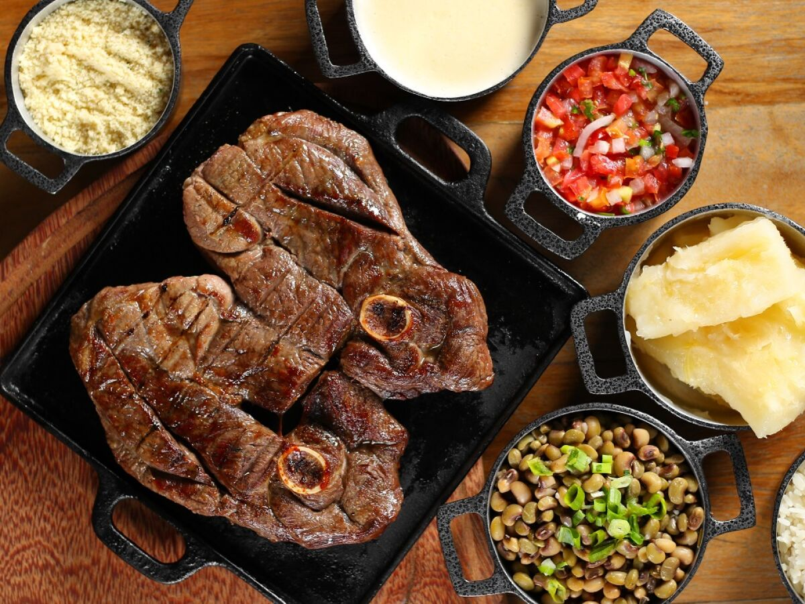
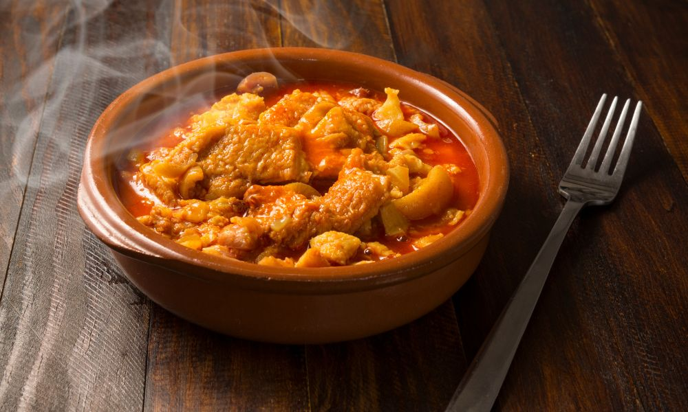
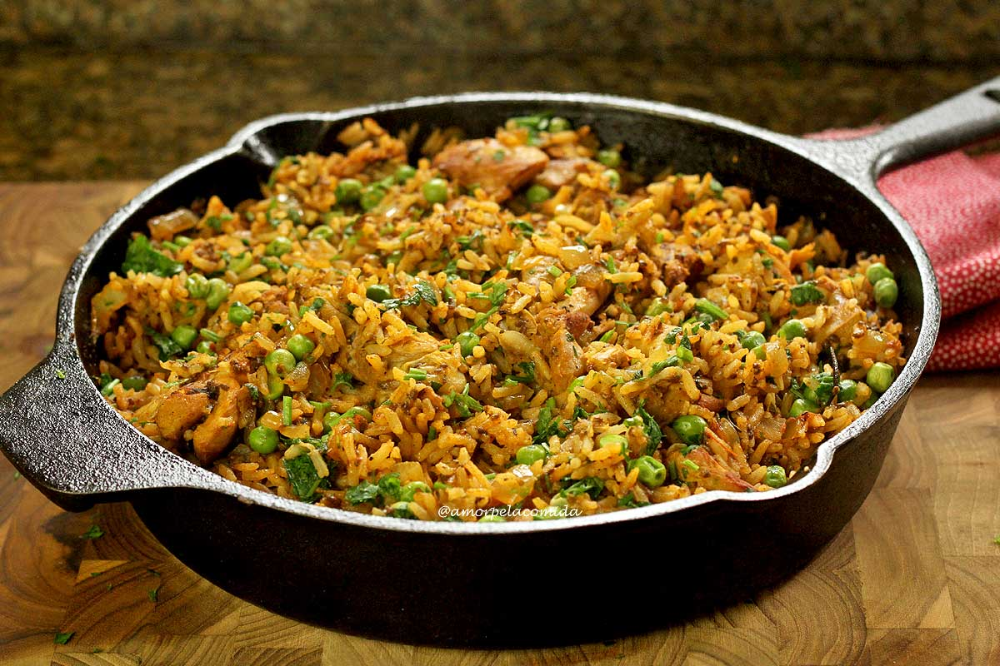
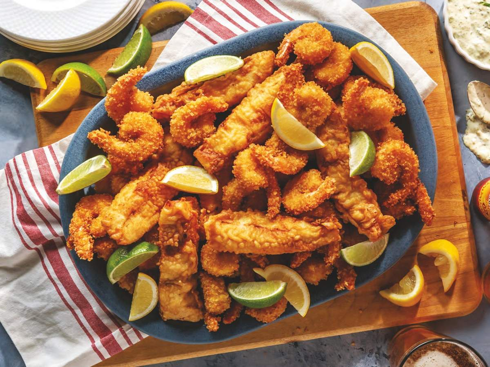

| IMAGEM |
PRATO |
DESCRIÇÃO |
PREÇO |
|  |
Bode Assado |
Carne de bode assada, servida com farofa, feijão-verde e macaxeira frita. |
R$ 90,00 |
 |
Carne de Sol com Macaxeira |
Carne de sol assada ou frita, acompanhada de macaxeira, queijo coalho e arroz. |
R$ 75,00 |
|  |
Buchada de Bode |
Vísceras do bode cozidas e temperadas, servidas em porções individuais com arroz e pirão. |
R$ 45,00 |
|  |
Galinhada |
Frango cozido com arroz, açafrão e outros temperos, formando um prato único. |
R$ 60,00 |
|  |
Peixe Frito |
Peixe de água doce, como a tilápia, frito e servido com pirão e arroz. |
R$ 65,00 |